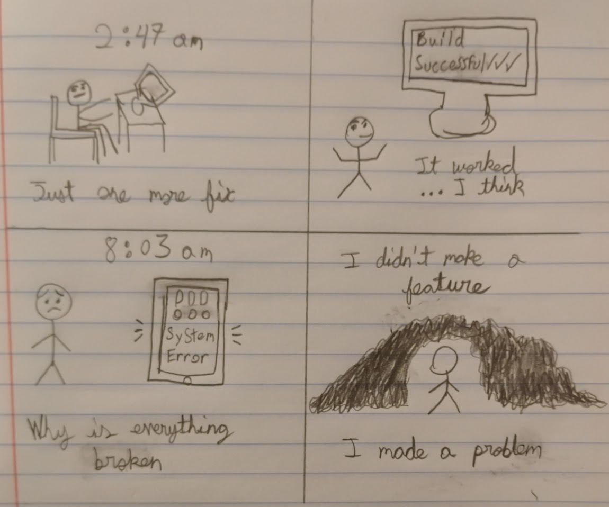

> INITIALIZING MAD_SCIENCE.LOG .............. [OK]
> LOADING SCRAPBOOK KERNEL ................. [OK]
> MOUNTING JOURNAL ENTRIES ................ [OK]
> CHECKING FOR MONSTERS ................... [WARNING: FOUND]
> READY.
MAD
SCIENCE
SCIENCE
A SCIENCE SCRAPBOOK — WINTER 2026
| STUDENT | Arav Sahni |
| STUDENT NO. | 2468547 |
| COURSE | ENG 603-200-AB |
| INSTRUCTOR | Dr. Jennifer McDermott |
| THEME | Software as Mad Science |
01010101010101010101010101010101
10101010101010101010101010101010
00110011001100110011001100110011
11100011100011100011100011100011
01101001011011100111010001100101
01101100011011000110100101100111
01100101011011100110001101100101
01000110011100100110000101101110
01101011011001010110111001110011
01010011011011110110011001110100
01110111011000010111001001100101
vim journal_entries.txt
JOURNAL ENTRIES
200–250 words each · different genres
ENTRY_001PROSE
What hits me about Victor Frankenstein is not the creature he builds, but the way he talks about building it. Shelley paints him as someone drunk on process: the long nights, the accumulating knowledge, the thrill of standing at the edge of discovery. He doesn’t stumble into creation. He constructs it deliberately, step by step, confident that each move is rational even as the whole project slides toward obsession. His lab is a “filthy creation,” yet he keeps returning, driven by an eagerness that only grows. It reads exactly like software work at 2 a.m.
The programmer in the night is not acting irrationally. The refactor is necessary. That edge case matters. The test is almost passing. From the outside it might look insane, but every choice has a reason. Victor never has an outside. He is inside the system he built, blind to the larger consequences, only realizing them when the creation stands up and walks away.
Shelley captures something the software world keeps forgetting: building something well does not equal understanding its impact. Creation without thinking about what it does next is not genius. It is negligence dressed in the language of progress. Victor’s crime is not ambition. It is refusing to imagine life after the compile succeeds. The monster is not a mistake. The monster is a release date.
The programmer in the night is not acting irrationally. The refactor is necessary. That edge case matters. The test is almost passing. From the outside it might look insane, but every choice has a reason. Victor never has an outside. He is inside the system he built, blind to the larger consequences, only realizing them when the creation stands up and walks away.
Shelley captures something the software world keeps forgetting: building something well does not equal understanding its impact. Creation without thinking about what it does next is not genius. It is negligence dressed in the language of progress. Victor’s crime is not ambition. It is refusing to imagine life after the compile succeeds. The monster is not a mistake. The monster is a release date.
ENTRY_002DRAMA
Faustus does not sell his soul for fun. He sells it for access: the ability to ask questions, explore systems, and move through constraints that ordinary people cannot. His ambitions are technical. He wants to wall Germany with brass, make the Rhine circle fair Wertenberg, give students free clothing, conjure coin. These are infrastructure problems, not evil schemes. He signs a twenty-four-year deal with Mephisto that, in 2026 terms, reads like a terms-of-service agreement nobody reads until it’s too late.
Technology makes this parallel uncomfortable. Every platform that promises power in exchange for data echoes Faustus’s bargain. You get control. The clock starts. The cost arrives later, often in ways you cannot predict. The precision of Marlowe’s final act is terrifying. Faustus tries to renegotiate a contract he never understood. Mephisto is not a devil. He is a legacy system. Faustus built his life on top of it without reading the documentation.
This is exactly how software fails. You make a system that works, but the consequences pile up quietly. You do not see them until it is too late. Like Faustus, engineers often trade convenience for power, curiosity for capability, without considering what happens when the clock runs out. The bargain seems worth it at first. The fallout is inevitable.
Technology makes this parallel uncomfortable. Every platform that promises power in exchange for data echoes Faustus’s bargain. You get control. The clock starts. The cost arrives later, often in ways you cannot predict. The precision of Marlowe’s final act is terrifying. Faustus tries to renegotiate a contract he never understood. Mephisto is not a devil. He is a legacy system. Faustus built his life on top of it without reading the documentation.
This is exactly how software fails. You make a system that works, but the consequences pile up quietly. You do not see them until it is too late. Like Faustus, engineers often trade convenience for power, curiosity for capability, without considering what happens when the clock runs out. The bargain seems worth it at first. The fallout is inevitable.
grep -i "quote" class_texts.db
QUOTES
Snippets from class texts — varied selection
“Learn from me, if not by my precepts, at least by my example, how dangerous is the acquirement of knowledge, and how much happier that man is who believes his native town to be the world, than he who aspires to become greater than his nature will allow.”
Shelley, Mary. Frankenstein. 1818 Text, Third Edition, Edited by D. L. Macdonald and Kathleen Scherf, Broadview Press, p. 80.
Victor speaks this directly to Walton, one obsessive warning another. It stopped me because it is not Shelley moralizing from outside the story; it is Victor himself, having lived the consequences, trying to short-circuit the same hunger he once had. The phrase “greater than his nature will allow” hits differently when you think about every founder who ever said “move fast and break things.” The warning is built into the ambition itself.
“In a solitary chamber, or rather cell, at the top of the house… I kept my workshop of filthy creation; my eyeballs were starting from their sockets in attending to the details of my employment.”
Shelley, Mary. Frankenstein. 1818 Text, Third Edition, Edited by D. L. Macdonald and Kathleen Scherf, Broadview Press, p. 81.
This image of Victor literally straining his eyes in a locked room, cut off from everyone, too absorbed to notice seasons changing, is the most honest description of a coding sprint I have read in a nineteenth-century novel. He calls it filthy. He knows. He keeps going anyway. That gap between knowing something is wrong and continuing regardless is what connects Victor to every engineer who has shipped something they were not proud of.
“‘Tis Magic, Magic that hath ravished me.”
Marlowe, Christopher. The Tragical History of Doctor Faustus (A-Text, 1604). “Mad Science” Course Pack 603-200-AB, John Abbott College, Fall 2012, p. 18.
Faustus has just dismissed divinity, law, medicine, and philosophy one by one, not because they are bad disciplines, but because they have ceilings. Magic has no ceiling. I chose this line because it captures the specific appeal of programming to a certain kind of mind: it is not that code is useful, it is that code is the discipline with no obvious limit. That word “ravished,” a word about being overcome rather than choosing, is precise. It is not enthusiasm. It is capture.
“He had been Eight Years upon a Project for extracting Sun-Beams out of Cucumbers, which were to be put into Vials hermetically sealed, and let out to warm the Air in raw inclement Summers.”
Swift, Jonathan. Gulliver’s Travels. Part 3, A Voyage to Laputa, Chapter 5. “Mad Science” Course Pack 603-200-AB, John Abbott College, Fall 2012, p. 48.
Swift’s Academy of Lagado is a satire on the Royal Society, but read in 2026 it reads equally well as a satire on Silicon Valley. The cucumber-sunbeam project is perfectly structured like a bad startup pitch: ambitious goal, eight years of runway, no working product, complete confidence that eight more years will do it. The detail of “hermetically sealed vials” is what makes it brilliant. The scientist has thought carefully about the container but not at all about whether the premise is sound.
“Read not to contradict and confute, nor to believe and take for granted, nor to find talk and discourse, but to weigh and consider.”
Bacon, Francis. “Of Studies.” Essays. “Mad Science” Course Pack 603-200-AB, John Abbott College, Fall 2012, p. 5.
I included this because it sits in productive tension with everything else in the scrapbook. Bacon is describing exactly the kind of slow, deliberate, critical engagement with knowledge that Victor Frankenstein and Faustus both fail to practise. Both read to confirm, not to question. Victor reads natural philosophy until he is “ravished” by it; Faustus reads until magic has already decided his fate. Bacon’s essay is the antidote to both, and neither of them takes it.
open comics.strip
COMIC
Original work — software as mad science

original comic made by Arav Sahni
Theme: the parallel between Victor Frankenstein’s creation and a software deployment that escapes its creator’s control.
grep -r "mad_science" /media/popular/
POP CULTURE
Mad science in popular culture

TELEVISION SERIES
Mr. Robot (2015–2019)
Elliot Alderson works in the same obsessive space as Victor Frankenstein. He believes in his method so completely that he cannot see the damage building around him. Where Frankenstein is obsessed with biology, Elliot is obsessed with systems. He wants to rewrite global finance and pursues it with the same sleepless, tunnel-vision focus Shelley gives her protagonist. Elliot doesn’t see himself as a criminal. He sees himself as a scientist fixing a broken experiment. Frankenstein sees himself the same way: following reason, blind to the consequences of his creation. Both are undone not by others but by what they set in motion. Elliot, like Faustus, makes a deal with forces larger than himself and the cost of that deal unfolds over time. When he realizes what he has unleashed, it is pure horror. He cannot control what he started.
fetch article.db
SCIENCE ARTICLE
Peer-reviewed article — ACM FAccT 2022
Taxonomy of Risks Posed by Language Models
This peer-reviewed article, published in the ACM FAccT 2022 proceedings by Weidinger et al., lays out a clear breakdown of the harms that large language models can cause. The authors, a team of AI safety researchers, identify six main types of risks: discrimination and representational harms, information hazards, misinformation, malicious uses, human-computer interaction issues, and environmental and socioeconomic impacts. They organize 21 specific risks and explain how they happen, give evidence, and suggest ways to reduce them. This connects to our class discussion in the same way Shelley’s Frankenstein does: the harms often come from the system working as designed, not from anyone trying to be bad. Each choice makes sense on its own, but together they can cause serious unintended problems. The authors also point out an “evaluation gap,” where developers underestimate what will happen once these models are deployed—just like Victor Frankenstein didn’t imagine the effects of his creation.
Weidinger, Laura, et al. “Taxonomy of Risks Posed by Language Models.” Proceedings of the ACM on Fairness, Accountability, and Transparency (FAccT), 2022, pp. 214–229. https://doi.org/10.1145/3531146.3533088
cat works_cited.mla
WORKS CITED
MLA format · alphabetical by author last name
Works Cited
Bacon, Francis. “Of Studies.” The Essays or Counsels, Civil and Moral.
Reprinted in Mad Science, John Abbott College, Fall 2012, pp. 5–6.
Esmail, Sam, creator. Mr. Robot. USA Network, 2015–2019.
Marlowe, Christopher. The Tragical History of Doctor Faustus (A-Text, 1604).
Reprinted in Mad Science, John Abbott College, Fall 2012, pp. 14–26.
McDermott, Jennifer. Mad Science. John Abbott College, Fall 2012.
Shelley, Mary. Frankenstein: The 1818 Text. Edited by D. L. Macdonald and Kathleen Scherf, Broadview Press, 2012.
Swift, Jonathan. Gulliver’s Travels. Part 3, A Voyage to Laputa, Chapter 5.
Reprinted in Mad Science, John Abbott College, Fall 2012, pp. 41–51.
Weidinger, Laura, et al. “Taxonomy of Risks Posed by Language Models.”
Proceedings of the ACM on Fairness, Accountability, and Transparency (FAccT),
2022, pp. 214–229. https://doi.org/10.1145/3531146.3533088.
cat mad_science.def
MAD SCIENCE
A personal definition — ENG 603-200-AB
mad science
// my working definition
Mad science is not really about danger. It is a failure of attention. You get so focused on making something work that you stop asking what it will do. Like Victor in Frankenstein, the process becomes the goal. The real problem is the gap between building something well and thinking about what it actually does.